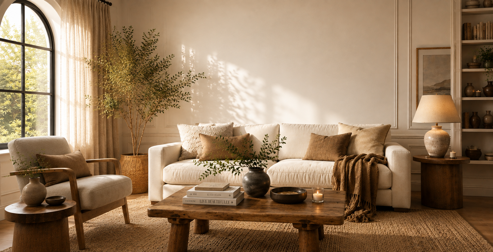
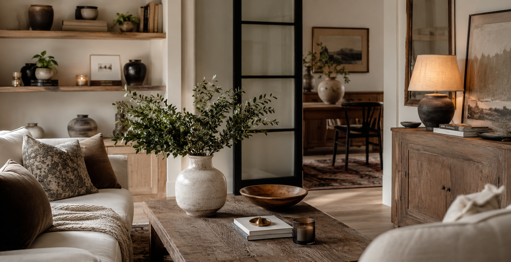
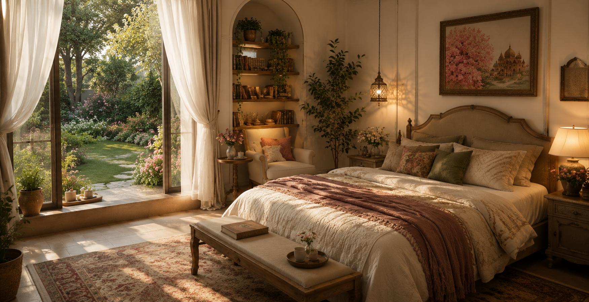
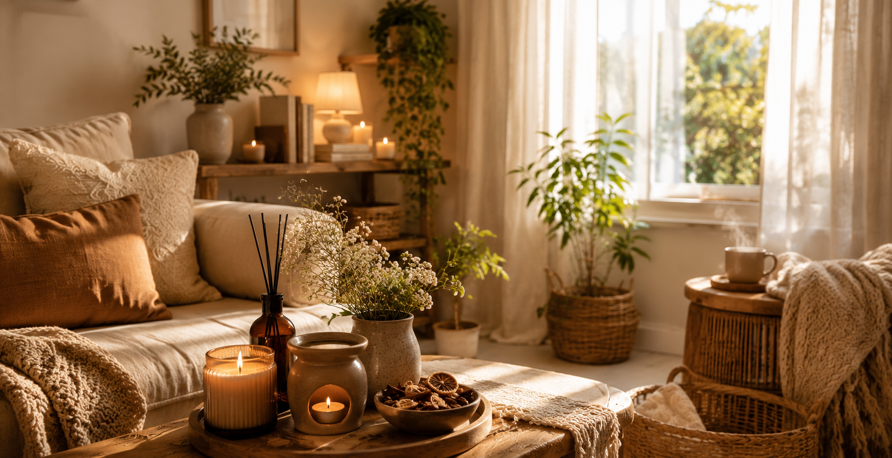

There's something about walking into a space that instantly makes you exhale. A space that feels warm, calm, and welcoming—not because it's perfect, but because it feels like you.
Here are beautiful ways to bring more calm and warmth into your home, without needing a complete makeover.
THE ONE THING TO CHANGE WHEN YOUR LIVING ROOM FEELS TOO EMPTY
Sometimes a living room can have all the right pieces and still feel strangely unfinished. The sofa is there, the coffee table is styled, the walls have something on them, yet the room doesn't quite feel warm or complete.

Before buying more furniture or filling every empty corner with decor, look at what is happening around your furniture. Very often, the missing element isn't another object. It's visual weight.
A room feels finished when different elements have enough presence to balance one another. Soft curtains, a properly sized rug, warm lighting, natural textures and one or two pieces with character can make a surprisingly big difference.
Start With The Floor
One of the easiest ways to make a living room feel more grounded is to look at the rug.
A rug that is too small can make the furniture feel disconnected, leaving large areas of empty floor around it. Whenever possible, choose a size that allows at least the front legs of your main seating to sit comfortably on the rug.
The goal isn't to cover the entire floor. It's to create a visual area that brings the sofa, chairs and coffee table together.
Then Look Up
Windows are often overlooked when a room feels empty.
Bare windows can make a living room feel unfinished, especially when there is plenty of wall space around them. Floor-length curtains can soften the room, add height and introduce another layer of texture without taking up valuable floor space.
For a calm, timeless look, consider linen or linen-look curtains in warm white, cream, beige or another soft neutral. Hang them higher and wider than the window frame when the space allows, so the curtains frame the window rather than making it feel smaller.
Don't Underestimate Lighting
Good living room lighting isn't only about being able to see clearly. It changes how the entire room feels.
If your living room relies mainly on one ceiling light, try adding another layer. A floor lamp beside the sofa, a table lamp on a console or a small lamp on a side table can create softer pools of light around the room.
Warm-toned lighting is especially useful when you want a living room to feel relaxed and inviting. Instead of lighting everything equally, let a few areas glow while other parts of the room remain softer.
Add One Piece With History
This is where antique and vintage pieces can make everything feel a little more interesting.
A room filled entirely with new furniture can sometimes look too predictable because every piece has the same polished feeling. An old wooden stool, vintage mirror, antique side table or aged ceramic can introduce character that is difficult to recreate with brand-new decor.
You don't need an entire vintage collection. In fact, one well-chosen antique piece can often have more impact than several decorative objects.
The contrast between something old and something contemporary is what makes the room feel collected rather than perfectly matched.
Bring In Texture, Not More Clutter
If your living room still feels bare, resist the temptation to simply add more small decorations.
Instead, look for texture. A woven basket, textured cushion, soft throw, natural wood, ceramic vase or subtly patterned rug can give the eye something to notice without making the room feel busy.
This is one of the easiest ways to make a neutral living room feel richer. You can keep the color palette simple while allowing different materials to create depth.
Give The Eye Somewhere To Rest
A beautiful room doesn't need every surface filled. In fact, leaving some space empty is part of what makes the intentional pieces stand out. The trick is to create a balance between decorated areas and quiet areas.
If your coffee table is full, your shelves are full and every wall has something hanging on it, adding more may make the room feel heavier rather than more finished.
Sometimes the best final touch is removing one thing.
The Simple Formula
If your living room feels too empty, start with this:
GROUND IT WITH A RUG.
SOFTEN THE WINDOWS WITH CURTAINS.
INTRODUCE ONE PIECE WITH CHARACTER.
LAYER TEXTURES INSTEAD OF MORE DECOR.
You don't need to redesign the room to make it feel complete. A few changes in scale, lighting and texture can give the same furniture a completely different presence.
And if there's one thing worth remembering, it's this: a finished living room isn't necessarily a room with more things. It's a room where everything feels like it belongs.
THINGS THAT MAKE A HOME LOOK MORE EXPENSIVE WITHOUT BUYING EXPENSIVE DECOR
There is a certain feeling some homes have that is difficult to explain. Nothing necessarily looks flashy. There may not be designer furniture, rare artwork or expensive accessories. Yet the whole space feels polished, calm and considered.

That feeling usually comes from the details people notice without consciously thinking about them. A home can look more expensive simply because it feels personal, consistent and finished. And surprisingly, many of those details can be created with things you already own.
Here are five places worth looking at before you buy anything new.
Make Your Everyday Things Look Intentional
Luxury has a funny relationship with ordinary objects.
A soap bottle sitting beside the sink feels completely different from the same bottle placed neatly on a small tray. A pile of loose remotes looks messy, while a simple box or bowl gives them a place to belong. Even everyday kitchen items can feel more considered when they are grouped rather than scattered.
This doesn't mean hiding everything. It means deciding which everyday objects deserve to be visible and giving them a little structure.
A wooden cutting board leaning against the backsplash, a stack of neatly folded hand towels or a small collection of ceramics can make functional spaces feel styled without turning them into display rooms.
This is one of those simple home decorating ideas that costs almost nothing but can make an everyday space feel noticeably more polished.
The trick is to make ordinary things look like they are there by choice.
Repeat Small Details Throughout The Home
A home feels more sophisticated when its rooms seem connected. You don't need every room to match. In fact, matching everything can make a home feel more staged than personal.
Instead, repeat small details.
Maybe warm wood appears in the kitchen and again in the living room. Perhaps the same soft cream tone appears in a bedroom, hallway and bathroom. You could repeat a particular metal finish, curved shape or natural material in different areas.
These little connections create continuity.
When you walk from one room to another and notice subtle similarities, the entire home interior begins to feel thoughtfully designed rather than decorated one room at a time.
You aren't trying to create identical rooms. You're creating a quiet visual thread that makes the whole home feel connected.
Frame The Things You Already Love
Beautiful homes aren't always filled with expensive artwork.
Sometimes the difference is simply how something is presented.
A small print can feel far more important inside a substantial frame. A child's drawing, botanical illustration, photograph or old postcard can become meaningful wall art when it is given the right setting.
Look around your home for things you genuinely like but have never displayed properly.
Try grouping a few related pieces together. Lean artwork on a shelf. Give one favourite photograph its own space instead of surrounding it with ten other objects.
The goal isn't to make your walls look like a showroom.
It's to make them look like someone with a strong sense of interior design actually lives there.
Personal pieces often do more for a room than generic decorative objects because they give the space a story.
Give Your Home Something Alive
There is something about natural elements that makes a room feel less manufactured.
A branch in a simple vase, a bowl of seasonal fruit, a potted plant or even a collection of interesting stones can introduce a sense of life into an otherwise carefully styled space.
You don't need elaborate floral arrangements.
One large branch can be more striking than a collection of tiny decorative pieces. A healthy plant in an interesting pot can become a focal point without looking overly decorative.
Natural elements also change slightly with the seasons, which gives your home a feeling of movement.
This is part of what makes some luxury home decor feel so effortless. The room doesn't look as though every detail was purchased to impress. It feels natural, layered and lived in.
Finish The Details People Touch
Some of the smallest parts of a home can have an unexpectedly large effect.
Think about the things you interact with every day: cabinet handles, drawer pulls, door knobs, switch plates, trays, hooks and even the containers sitting on open shelves.
These details are easy to overlook because they are functional.
But when several small finishes work together, they can quietly make a room feel more complete.
You don't have to replace everything. Start with the areas that are most visible and see whether the existing finishes feel disconnected from the rest of the room.
Sometimes cleaning, simplifying or coordinating what is already there is enough.
It is the kind of detail you may not immediately notice, but you definitely notice when it feels wrong.
The Expensive Looking Home Check
Before buying another decorative piece, walk through your home and ask yourself:
DO MY EVERYDAY OBJECTS LOOK INTENTIONAL?
DO DIFFERENT ROOMS FEEL CONNECTED WITHOUT LOOKING IDENTICAL?
HAVE I GIVEN MY FAVOURITE THINGS A PLACE TO SHINE?
IS THERE SOMETHING NATURAL BRINGING LIFE INTO THE SPACE?
DO THE SMALL FINISHES FEEL CONSIDERED?
A beautiful home doesn't have to announce how much was spent on it.
Often, the most elevated spaces are the ones where ordinary things have been given a little more thought.
So before you go shopping for something that will make your home feel expensive, look around once more. You may already have everything you need.
THE SECRET TO A RICH, ARTISTIC HOME: COLOR & TEXTURE
Some homes look beautiful the moment you walk in.

Not because everything is perfectly matched, or because every piece looks brand new, but because the room has a certain feeling. There might be a vintage chair beside a contemporary lamp, a faded painting against a warm wall, handmade ceramics on an old wooden shelf and soft fabrics scattered naturally around the room.
Nothing feels too calculated. Yet nothing feels random either.
That balance is what makes an interior feel rich, personal and artistic. And surprisingly, you don't always need more furniture or more decoration to create it. Often, the difference comes down to two simple elements: color and texture in interior design.
Color creates the emotional atmosphere of a room. Texture gives the eye something to explore. Together, they add depth, warmth and character. The qualities that can make a house feel collected rather than simply decorated.
It Starts With How You Want The Room To Feel
Before choosing a paint color or searching for the perfect cushion, think about the atmosphere you want to create. Do you want the room to feel calm and earthy? Warm and nostalgic? Creative and slightly unexpected? Bright and relaxed?
This is where color psychology can be useful.
We naturally associate different colors with different moods, although our responses aren't universal. Personal memories, culture, natural light and even the exact shade can change how a color feels.
A soft sage green can feel peaceful and connected to nature, while a deeper olive can feel more dramatic and sophisticated. Warm cream can make a room feel gentle and inviting, while terracotta, rust and tobacco tones can bring a sense of warmth and nostalgia.
This is why choosing a color simply because it is “in” can sometimes leave a room feeling disconnected from you.
Instead, start with the feeling.
Once you know the mood you want, choosing the colors becomes much easier.
Build A Color Story, Not A Matching Set
One of the easiest ways to make a room feel sophisticated is to stop trying to make everything match.
A beautiful home color palette can contain several shades that aren't identical but still feel as though they belong together.
Imagine a warm ivory wall with aged wood furniture, muted olive cushions, a faded rust-colored artwork and a small touch of dusty blue. None of these colors needs to dominate. They simply appear at different moments throughout the room.
This creates something much more interesting than a perfectly coordinated color scheme.
You can also repeat a color without repeating it exactly. A warm brown might appear in the wooden furniture, a woven basket and the frame of a painting. A muted green might show up in a cushion, a ceramic vase and a little greenery near the window.
The connection is subtle.
And subtle connections are often what make an interior feel intentional.
Color Changes With Light
There is another reason choosing color for your home isn't as simple as picking a shade from a screen.
Light changes everything.
A warm cream can look soft and golden in afternoon sunlight but much cooler in artificial light. A muted green may appear fresh during the day and considerably deeper in the evening.
This is especially important when choosing wall colors. Instead of judging a paint color from a tiny sample, look at it in the actual room at different times of day. Notice how it behaves beside your flooring, furniture and natural materials.
The goal isn't to find a color that looks exactly the same all day.
The goal is to find one that continues to feel beautiful as the light changes.
Then Let Texture Do The Work
Now imagine that same room with everything in the same finish. Smooth walls. Smooth furniture. Smooth cushions. Smooth accessories.
Even with a beautiful color palette, the room could still feel a little flat. This is where texture in interior design becomes so important.
Texture adds another layer to the visual experience. Linen catches light differently from velvet. Rough ceramic feels completely different from polished glass. Natural wood has movement and variation that a perfectly smooth surface doesn't.
You don't necessarily need lots of textures. You just need enough variation to keep the room interesting.
A linen curtain beside a wooden table. A woven rug beneath a smooth coffee table. A handmade ceramic vase sitting on a polished surface.
These small contrasts give the room dimension without making it feel busy.
The Beauty Of Old, New & Imperfect
Some of the most memorable interiors have a little history in them.
A vintage mirror with a slightly aged frame. An old wooden stool with visible grain. A handmade bowl that isn't perfectly symmetrical. A retro lamp found somewhere unexpected.
These pieces have something that mass-produced decoration often struggles to create: character.
This is why vintage home decor works so well alongside contemporary furniture.
You don't need to turn your home into a time capsule. In fact, mixing periods usually creates a much more sophisticated result.
A vintage cabinet can look beautiful beside a modern sofa. An old painting can become the focal point above a clean-lined console. A retro chair can bring personality into an otherwise simple corner.The contrast gives the room a sense of history without making it feel old-fashioned.
Boho Doesn't Have To Mean Cluttered
There is a softer, more refined side to boho decor that has nothing to do with filling every surface.
Think natural materials, layered fabrics, warm earthy colors, handmade pieces and objects that feel as though they were discovered rather than selected from one collection.
A woven basket can add warmth.
A textured rug can anchor the furniture.
A few linen cushions can soften a sofa.
A handmade ceramic piece can add an imperfect, artistic touch.
But each piece needs space around it.
That is the difference between a room that feels collected and one that feels crowded.
You don't have to display everything you love at once. Some of your favourite pieces will actually become more noticeable when they have room to breathe.
Let Art Be The Unexpected Element
Art can completely change the personality of a room.
It doesn't have to match the furniture, and it certainly doesn't have to coordinate perfectly with the color palette.
In fact, a little tension can make a room more interesting.
A dramatic painting can introduce a color that appears nowhere else. An unusual sculpture can break up a row of conventional objects. A collection of mismatched frames can make a simple wall feel personal.
Even the way you display art matters.
A large artwork doesn't always need to be perfectly centered above a piece of furniture. A smaller painting leaning casually against a wall can create a relaxed, collected feeling.
The question isn't always whether something matches.
Ask whether it adds something.
Does it create curiosity? Does it introduce a different shape, color or texture? Does it tell you something about the person who lives there?
Those are the details that make an artistic home feel alive.
Contrast Is What Creates Depth
One of the easiest ways to make a room more visually interesting is to place different qualities beside each other. Soft linen can sit beside solid wood. Rough handmade pottery can contrast with smooth glass. A dark vintage cabinet can stand against a warm ivory wall.
You can do the same thing with color.
A deep olive against cream.
Rust beside dusty pink.
Dark wood against pale textiles.
Warm beige with a small amount of black.
The contrast doesn't have to be dramatic. Even small differences can prevent a room from becoming visually flat. This is particularly useful in a neutral interior, where there may not be many strong colors competing for attention.
When the palette becomes quieter, materials become part of the decoration.
A Neutral Room Can Still Have A Lot To Say
Neutral doesn't have to mean plain.
Some of the most sophisticated rooms use very little color but still feel incredibly rich.
Imagine warm ivory walls, pale oak, woven fibers, natural stone, aged brass and soft linen. The palette is restrained, but every material behaves differently.
That difference creates depth.
This is one of the reasons neutral interiors can feel so timeless. You aren't relying on bright colors to make the room interesting. Instead, you're allowing light, materials, shapes and small details to do the work.
And if you eventually want more color, you can introduce it gradually through artwork, cushions, ceramics or smaller decorative pieces.
Give Your Room One Unexpected Moment
A room becomes memorable when something catches you slightly off guard.
Maybe it is a mustard-yellow chair in an otherwise earthy room.
Maybe it is an oversized vintage mirror.
Maybe it is a bright piece of artwork above a quiet console.
Maybe it is simply a beautifully unusual ceramic sitting on a shelf.
You don't need several statement pieces.
One unexpected detail can be enough.
This is also a useful approach if you are working with existing home decor and don't want to completely redesign the room. Look around and find the area that feels too predictable.
That is probably where a little surprise belongs.
The Art of Collecting, Not Cluttering
A home with personality usually develops over time.
You find a piece you love. You keep an old object because it has a story. You bring home something handmade. You discover artwork that makes you stop scrolling and look twice.
Eventually, these things begin to live together.
That's what gives a room that wonderful collected feeling.
But collecting doesn't mean keeping everything on display.
Edit your space.
Move things around.
Put some pieces away for a while and bring them back later. Give your favorite objects enough room to be appreciated.
A beautiful interior isn't necessarily full.
It is considered.
Before You Buy Something New
The next time you feel like your room needs “something,” pause before adding another piece of furniture or decoration.
Look at the room as a whole.
Is the color palette too cool? Could a warmer tone make it feel more inviting?
Are all the surfaces smooth? Perhaps a woven, aged or handmade material would add more depth.
Does everything look too new? A vintage or imperfect piece could bring character.
Is there too much happening in one corner? Maybe what the room needs is actually some empty space.
Sometimes the best decorating decision isn't adding something.
It's allowing what you already have to stand out.
Let Your Home Have A Point of View
There are endless decorating trends, color forecasts and styling rules telling us what a beautiful home should look like.
But the most interesting interiors rarely feel as though they were assembled from a checklist.
They have a point of view.
They mix old and new. They use color without being afraid of restraint. They bring together materials that aren't supposed to match perfectly. They leave room for artwork, memories and unexpected discoveries.
That is what makes an interior feel personal.
Color creates the mood. Texture creates the depth. Contrast creates the character.
And the things you choose: the vintage find, the handmade ceramic, the favorite artwork, the fabric you couldn't resist; are what turn that design into your home.
You don't need to fill every corner or follow every decorating rule.
You simply need to create a space where the things you love can exist beautifully together.
HOW TO MAKE YOUR HOME SMELL GOOD, COZY & INVITING
There is something about walking into a home that smells fresh, warm, and inviting. It instantly makes the space feel more comfortable. And you don't need to fill every room with strong fragrances to get that feeling. A few simple habits and little DIY ideas can make a surprisingly big difference.

Start With Fresh Air
Before reaching for a fragrance, give your home a little fresh air. Open the windows for a few minutes and let the rooms breathe, especially after cooking or cleaning. It is one of the simplest ways to make your home smell fresher, and sometimes it is all you need to get rid of that slightly stale feeling.
Make A Cozy Simmer Pot
Want your home to smell amazing without buying another fragrance? Try a simmer pot. Add a few orange slices, cinnamon sticks, and some rosemary to a pot of water and let it gently simmer while you're nearby. The combination creates that warm, cozy feeling that makes the whole home feel a little more welcoming.
You can also play around with what you have in the kitchen. Lemon and rosemary feel fresh and clean, while orange and cinnamon feel warmer and more comforting. Just keep an eye on the pot and make sure it never runs out of water.
Give Your Fabrics Some Attention
Here's something we often forget: soft things can hold onto smells. Curtains, rugs, blankets, cushions, and bedding can slowly collect everyday odors. Washing them regularly, giving them some fresh air, or simply putting away damp towels can make your home smell noticeably cleaner.
Choose A Scent That Feels Like You
Your home doesn't need to smell like a store. In fact, it is much nicer when it has a scent that feels personal to you. Maybe you love fresh citrus, soft vanilla, clean linen, or warm woody notes. Choose one or two scents you genuinely enjoy and let them become part of the feeling of your home.
Find The Little Sources Of Odor
Sometimes your home doesn't need more fragrance. It just needs a little detective work. Check the trash can, kitchen sink, shoes, damp towels, and other small places where unwanted odors can hide. Taking care of the source will always work better than trying to cover it with another scent.
Bring In Natural Scents
You can make a room feel beautiful and smell lovely at the same time. A bowl of fresh lemons in the kitchen, a small bunch of rosemary, fresh flowers, or dried botanicals can add a subtle natural scent without making the room feel overwhelming. They also add those little decorative details that make a home feel more lived-in.
Keep The Bedroom Soft And Fresh
For the bedroom, keep things simple. Fresh bedding, a little ventilation, and a gentle scent are usually enough. You want the room to feel calm and comfortable, not like you walked into a perfume shop. Sometimes that clean, just-washed feeling is the coziest scent of all.
Think Fresh First, Fragrance Second
The best-smelling homes aren't necessarily the ones with the most fragrance. They are the ones that feel fresh to begin with. Keep the air moving, stay on top of everyday odors, refresh your fabrics, and then add a few scents you love. Those small details can turn an ordinary room into a home that feels warm, cozy, and inviting every time you walk through the door.